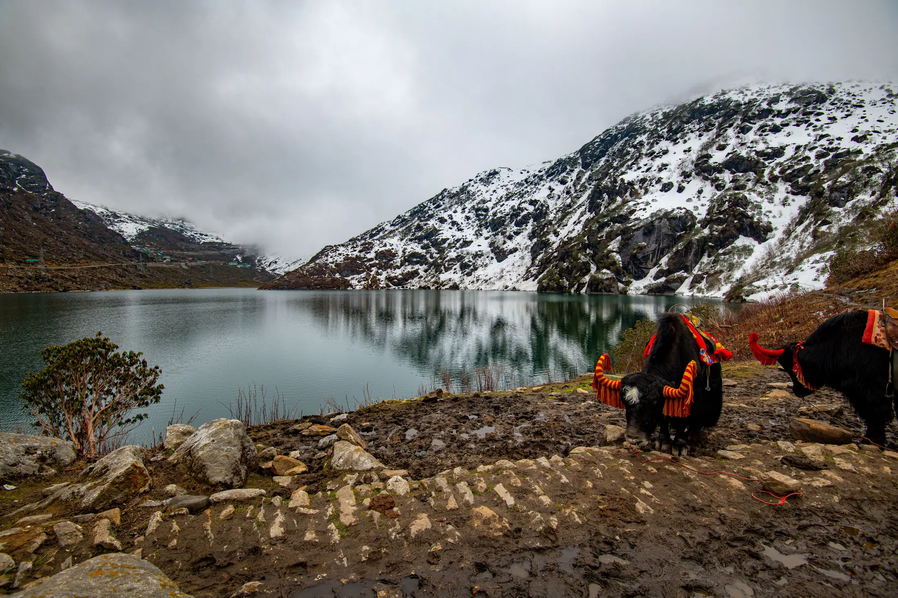

- Sandakphu is the highest point of West Bengal (3,636 m) and a gentle ridge walk where you sleep in homestays, not tents.
- Go in spring (March to May) or autumn (mid-September to mid-November) for clear views; the monsoon often hides the peaks.
- Operators list about ₹9,000 to ₹15,750 on their own pages, but routes and days differ, so compare what each price covers.
Sandakphu is a week-long ridge trek in the Darjeeling hills, reaching 3,636 m, the highest point in West Bengal. You walk along the India-Nepal border and sleep in homestays and guesthouses, with a view of Kangchenjunga and Everest if the sky is clear.
Who is the Sandakphu trek for?
It suits beginners with good stamina and anyone who prefers a roof and a hot meal to a tent. Bikat Adventures rates it easy but warns of long days, steep stretches and weather swings. Compare it with harder Sikkim treks like Goechala and Dzongri, or explore the 3D route on the Sandakphu page.

Sandakphu trek itinerary
Bikat's seven-day Sandakphu Phalut plan from Jaubhari to Sepi is below. Other operators start at Manebhanjan or Chitrey, and day distances differ between sources. Treat the numbers as a guide.
| Day | Route | Distance | Time | Sleep at |
|---|---|---|---|---|
| 1 | Bagdogra → Jaubhari (drive) | 110 km | about 5 h | Homestay, 2,240 m |
| 2 | Jaubhari → Tumling | 9 km | 7 to 8 h | Homestay, 2,875 m |
| 3 | Tumling → Kalapokhri | 15 km | about 8 h | Homestay, 2,990 m |
| 4 | Kalapokhri → Sandakphu | 5 km | 2 to 3 h | Guesthouse, 3,627 m |
| 5 | Sandakphu → Phalut | 20 km | 7 to 8 h | Shelter at Phalut |
| 6 | Phalut → Gorkhey | 12 km | 4 to 5 h | Homestay, 2,400 m |
| 7 | Gorkhey → Sepi, then drive to Bagdogra | 20 km | 7 to 8 h | Sepi to Bagdogra about 140 km, 5 h |
Notice the shape: the sleeping altitude rises gently to 2,875 m, 2,990 m, then 3,627 m on night 4. That last step of about 640 m is the one to respect. Bikat gives Sandakphu as 3,627 m while Wikipedia says 3,636 m, so sources differ slightly. We have left Phalut's altitude off the chart because the figure on Bikat's page did not look reliable. Learn to read this in how to read a trek's altitude gain.
Best time for Sandakphu
- March to May: days about 10 to 20 °C and nights 5 to 10 °C. Rhododendrons bloom in April and May (Bikat). See treks in March and April.
- Mid-September to mid-November: days 5 to 15 °C, nights 0 to 5 °C, generally dry and clear. See treks in October and November.
- Monsoon: not a recommended window; cloud usually hides the view that is the whole point.
- Winter: not covered by Bikat's recommended windows; some operators list dates into January, so ask about cold and snow.

How to reach the Sandakphu trailhead
The nearest airport is Bagdogra (about 82 km from Manebhanjan, per Wikivoyage); New Jalpaiguri (NJP) is the railhead. Trek in Sikkim reports a shared jeep from NJP via Darjeeling at ₹400 to ₹600 a seat (5 to 6 hours) and a private taxi at ₹3,500 to ₹5,000. Wikipedia says Manebhanjan is about 28 km from Darjeeling. The trail ends at Sepi, so book transport at both ends; the last ATM on the way is at Mirik.
Sandakphu trek cost
Prices below are base prices on each operator's own page in October 2026. They change, and they cover different routes, so read what is included.
| Operator (own page) | Base price | Notes on that page |
|---|---|---|
| Trek in Sikkim | ₹9,000 | Manebhanjan to Srikhola; transfers extra |
| The Searching Souls | ₹10,500 | ex-Manebhanjan, early bird |
| Trekup India | ₹11,980 | ex-NJP, plus GST; transport extra |
| Bikat Adventures | ₹13,400 | Jaubhari to Sepi, plus 5% GST; vegetarian meals, homestays, permits, leader included; NJP transport extra |
| Himalaya Trekker | ₹13,500 | ex-Chitrey, plus GST |
| Treknomads | ₹33,999 | ex-Bagdogra, Darjeeling hotel and transfers included |
Porter or horse: Himalaya Trekker lists ₹1,200 a day each. See how much a trek in India costs.
Permits, fees and ID
Forest, camping and trek permits are arranged by Bikat and covered by its fee for Indian nationals; foreign nationals pay roughly ₹2,000 extra. Bikat asks for photo ID and a medical certificate. RoundGlass Sustain lists the Singalila National Park fee as ₹500 for foreigners against ₹120 for Indians (2025). Carry ID because the trail runs along the border. See trek permits in India.
What to pack and stay safe
- High-ankle trek shoes, thermals, warm jacket, rain jacket and gloves; nights near zero in autumn.
- Head torch for sunrise starts, UV sunglasses, and two 1-litre bottles: there is no water between Sandakphu and Phalut (Bikat).
- Cash, ID, power bank (no charging at Phalut).
Full list: Himalayan trek packing list. At around 3,600 m a headache with nausea or dizziness can be altitude sickness; rest, and go down if it worsens (altitude sickness on treks). Trekup India lists the nearest health centre at Sepi, about an hour from the end of the trail. This is general guidance, not medical advice.
Sources
- Bikat Adventures: Sandakphu Phalut trek
- Wikipedia: Sandakphu
- Wikivoyage: Sandakphu
- RoundGlass Sustain: Singalila National Park guide
- Trek in Sikkim: Sandakphu trek guide
- Himalaya Trekker: Sandakphu trek
- Trekup India: Sandakphu Phalut
- The Searching Souls: Sandakphu trek
- Treknomads: Sandakphu Phalut
Quick questions
Is Sandakphu trek easy?
Bikat rates the Sandakphu Phalut trek easy (level 2 on its scale) and suitable for beginners, but notes long days, steep stretches and changeable weather. It is a walk of many hours, not a technical climb.
Which months are best for Sandakphu?
Bikat recommends March to May and mid-September to mid-November. Spring brings rhododendrons in April and May; autumn is usually drier and clearer.
Do I need a guide for Sandakphu?
Wikivoyage lists a guide as compulsory for everyone in Singalila National Park. Operators arrange permits and guides as part of their package.
Which mountains can you see from Sandakphu?
Wikipedia says four of the world's five highest peaks are visible: Everest, Kangchenjunga, Lhotse and Makalu, plus the whole Kangchenjunga range. Cloud decides whether you see them.